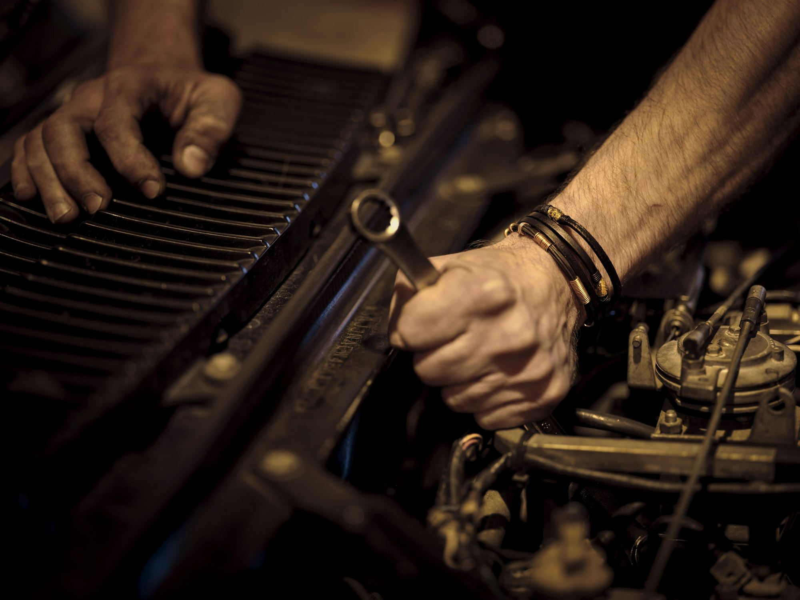
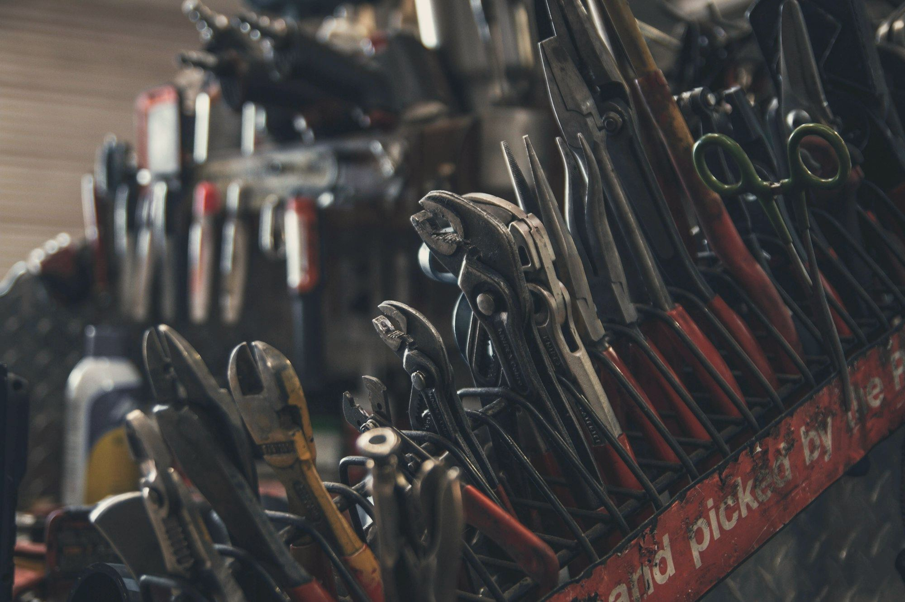
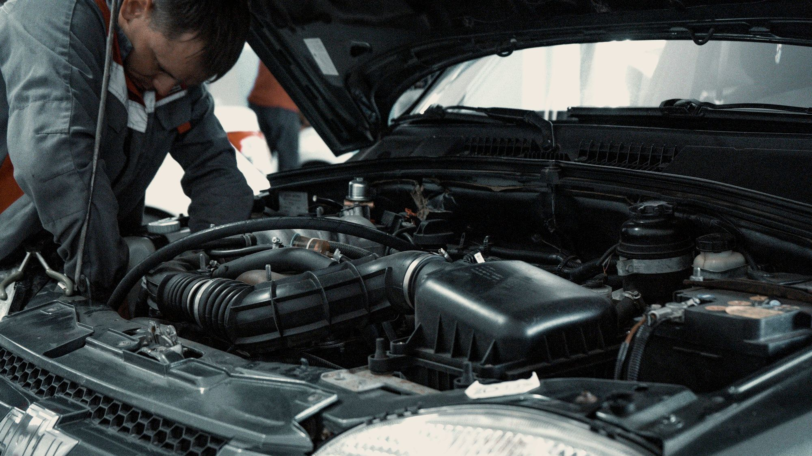
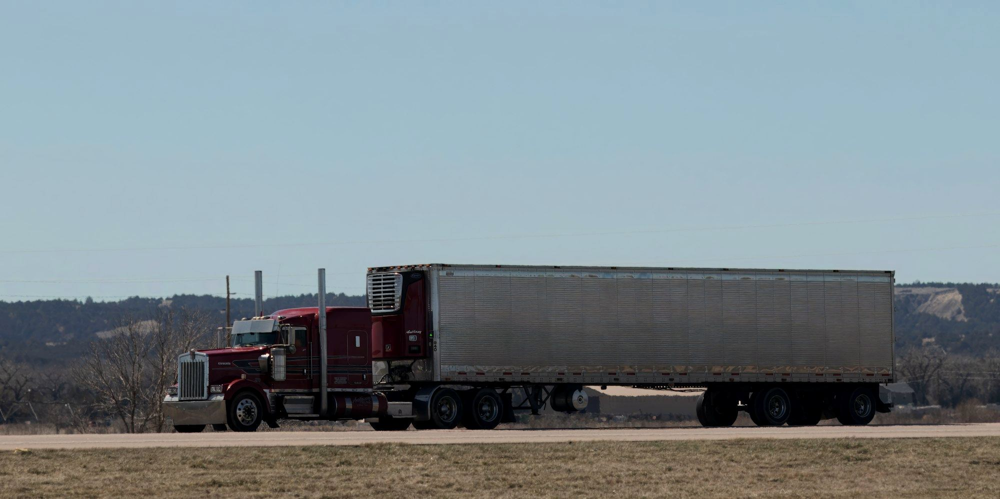

On vientà vous.
Un camion arrêté, c’est de l’argent qui *dort.* Notre atelier roule jusqu’à vous : sur la route, au *chantier* ou dans votre *cour.*

L’atelier vient
jusqu’à vous.
Pas besoin de remorquer un camion jusqu’au garage. Le Lion arrive avec l’outillage et répare là où le véhicule est arrêté.
- Diagnostic sur placeOn trouve la panne avant de remplacer quoi que ce soit.
- Lourd, auto et remorqueUn seul service pour tous vos véhicules.
- Un numéro direct579-368-4357, par appel ou par texto.

Un mécano.
Toute la flotte.
Du semi-remorque au pick-up familial, le même service professionnel se déplace pour chaque véhicule.

Heavy-duty
- Camions lourds et tracteurs
- Diagnostic électronique
- Freins à air
- Suspension et direction
- Entretien préventif

Automobile
- Autos, VUS et camionnettes
- Diagnostic moteur
- Freins et suspension
- Batterie et démarreur
- Entretien régulier

Remorques
- Remorques de toutes tailles
- Freins de remorque
- Roulements et essieux
- Lumières et filage
- Inspection avant la route
Du pneu
au moteur.
Freins, roulements, pneus et roues : le camion de service apporte l’outillage du lourd directement là où vous êtes.
Vous appelez
Décrivez le problème et dites-nous où se trouve le véhicule. Une photo par texto aide à arriver avec les bonnes pièces.
On roule jusqu’à vous
Le camion de service se rend sur l’accotement, au chantier, à la ferme ou dans votre cour. Pas de remorquage pour vous rendre au garage.
On répare sur place
Diagnostic et réparation directement sur le terrain, pour que vous repreniez la route le plus vite possible.

Partout
autour de St-Lin.
Sur la route, au chantier ou au garage de la ferme : si votre véhicule ne peut pas venir, le Lion se déplace.
Là où est le véhicule
On travaille sur la route, au chantier ou chez vous.
Lourd, auto et remorque
Un seul service mécanique pour toute votre flotte.
Un numéro direct
579-368-4357, par appel ou par texto.
Moins d’arrêt
Pas d’attente pour une place au garage ni de remorquage pour s’y rendre.

St-Lin
et environs.
Basés à Saint-Lin–Laurentides (J5M), on couvre la région de Montcalm, le sud de Lanaudière et les Basses-Laurentides. Votre secteur n’est pas dans la liste? Appelez, on vous dit tout de suite.